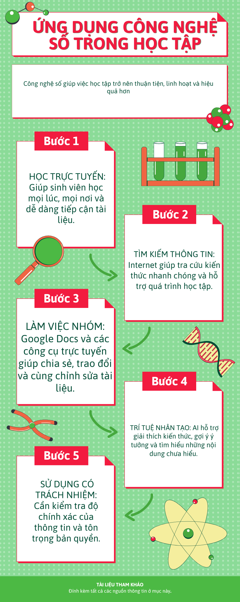

Lợi ích của công nghệ số trong học tập
Công nghệ số giúp người học tiếp cận nguồn tài liệu phong phú, học tập linh hoạt và kết nối hiệu quả với giáo viên, bạn bè.
Infographic

Công nghệ số giúp người học tiếp cận nguồn tài liệu phong phú, học tập linh hoạt và kết nối hiệu quả với giáo viên, bạn bè.
